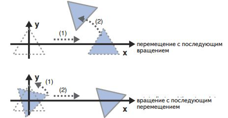

Посмотрим, как можно объединить два преобразований: перемещения с по-следующим вращением:
1. (координаты после перемещения) = (матрица перемещения) × (исходные координаты)Причем, если поменять местами (матрица вращения) и (матрица перемещения) результат поменяется.
Объединение нескольких преобразований, называют моделированием преобразований (или моделью преобразований), а матрицу, представляющую такую модель преобразований, называют матрицей модели.
Важно, что при конструировании матрицы модели, нужно всегда держать в голове последовательность преобразований, которые применяются к исходным координатам, для того чтобы получить ожидаемый результат. Так как даже в этом примере легко ошибиться, потому-что задача поставлена как "перемещения с по-следующим вращением". Если не задумываться о последовательности преобразований (матрица модели) = (матрица перемещения) × (матрица вращения), а это как показано на рисунке выше совершенно другой результат (вращение с последующим перемещением).